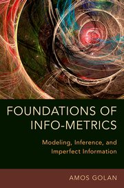

Info-metrics is the science of modeling, reasoning, and drawing inferences under conditions of noisy and insufficient information. The Foundations of Info-Metrics examines the theoretical underpinning of info-metrics and provides extensive interdisciplinary
applications.

Chapter 1 is now available online (see the detailed table of contents section)
Figure 5.4. Entropy Contours of Three Assets. The color of the contours represents their entropy levels. All contours are within the possible set of solutions where the sum of the weights equals one. The point ‘Optimal Allocation 1’ is the optimal solution
with mean of at least 1.35, and standard deviation of no more than 4.84. The point ‘Optimal Allocation 2’ is the optimal solution where the only constraint is that the mean is greater than 1.35. The vertical dashed lines at reflects
portfolios with different entropy values (and different mean performance) and represents different levels of diversification for a fixed standard deviation. The horizontal dashed line at the mean level of 1.35 presents possible
portfolios with the same mean but with different levels of risk. The cost of diversification here is the increase in the standard deviations. The upper envelope curve is the well-known set of mean-variance optimal solutions.
The horizontal axis is the standard deviations of the range. The vertical axis is the standard deviations of the temperature. Both are in units of 1/3 standard deviations. The surprisal is defined as I(n, k)LA = -ln[p*rk(2013)/p*rk(1931)].
The mean temperature increased from 18.16 °C in 1931 to 18.88 °C in 2013. This figure shows a decrease in the range of the temperature for all levels of temperature, meaning the interval decreases for every period of
the year.
Figure 14.2. The predicted probability (gray line) of each patient together with the correct diagnosis (dark points) of being diseased or healthy. Each point on the gray line represents the predicted disease probability of a patient in the full sample
of 270 individuals. Each dark point represents the correct diagnosis (healthy/sick) for each individual. The concentration of dark points on the bottom (zero) left hand side of the figure corresponds nicely to the low redicted
probabilities of these individuals. The same behavior is observed at the top right hand side, but this time it’s for the diseased individuals. The two extreme predictions (healthy and diseased) and their values are shown in the
figure.
Elections--probability of voting Democrat (from Chapter 14)
Figure 14.4. Comparing the Prediction of the Democrats under two scenarios. Both scenarios are based on the info-metrics discrete choice model. The dark line is when priors are used. The gray line is when no priors are used. The individuals are sorted
from lowest (left) to highest predicted probabilities based on the model with priors. There are 295 individuals who voted Democrat. Except for a very small number of individuals (all with lower probability of voting democrats)
the model with priors dominates the no-priors model. It has a higher predicted probability, resulting in an overall better prediction of the election.
Website designed by Arnob L. Alam, Aarti Reddy and Skipper Seabold
{kind=link}
{kind=link}
{kind=link}
{kind=link}
{kind=link}
{kind=link}